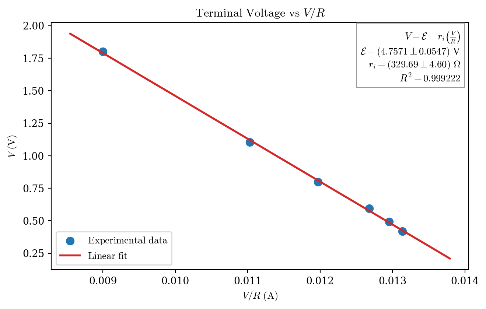
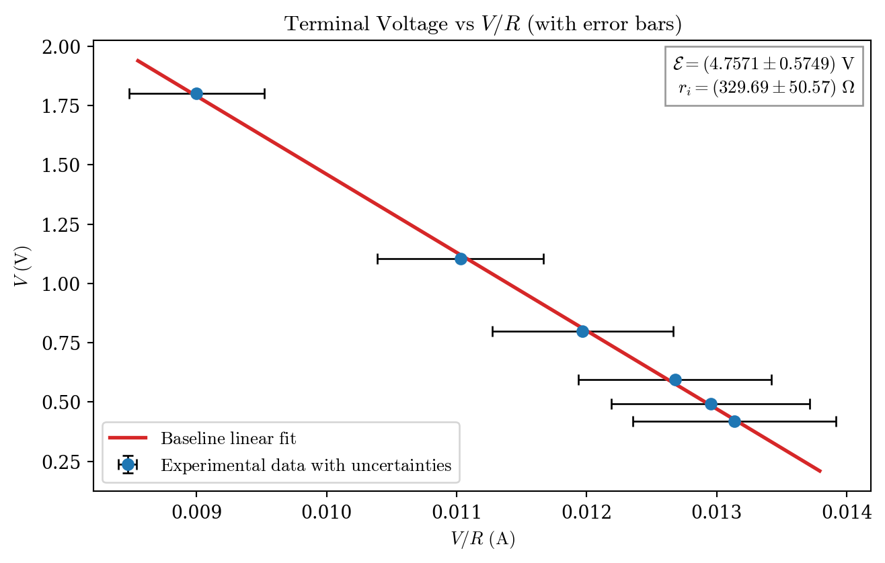

| configuration | resistance_ohm | voltage_v | |
|---|---|---|---|
| 0 | R47 | 47.000000 | 0.596 |
| 1 | R100 | 100.000000 | 1.103 |
| 2 | R200 | 200.000000 | 1.800 |
| 3 | R100_parallel_R200 | 66.666667 | 0.798 |
| 4 | R100_parallel_R47 | 31.972789 | 0.420 |
| 5 | R200_parallel_R47 | 38.056680 | 0.493 |
2026-10-29
Estimate the source electromotive force (EMF, \mathcal{E}) and internal resistance (r_i) from measured terminal voltages across different load resistances.
The load resistances are:
Measured voltages (V) across each corresponding load are:
0.596, 1.103, 1.800, 0.798, 0.420, 0.493.
| configuration | resistance_ohm | voltage_v | |
|---|---|---|---|
| 0 | R47 | 47.000000 | 0.596 |
| 1 | R100 | 100.000000 | 1.103 |
| 2 | R200 | 200.000000 | 1.800 |
| 3 | R100_parallel_R200 | 66.666667 | 0.798 |
| 4 | R100_parallel_R47 | 31.972789 | 0.420 |
| 5 | R200_parallel_R47 | 38.056680 | 0.493 |
For a source with EMF \mathcal{E} and internal resistance r_i feeding a load R:
V = \mathcal{E} - I r_i
Using I = \frac{V}{R}, the linear model is:
V = \mathcal{E} - r_i\left(\frac{V}{R}\right)
So if we define:
then:
y = m x + b
with:
Baseline fit results (1\sigma, from regression covariance only):

The previous results are kept unchanged. Now we add instrument contributions:
For the uncertainty model, these limits are treated as rectangular distributions:
u_R = \frac{0.10\,R}{\sqrt{3}}, \qquad u_V = \frac{0.01}{\sqrt{3}}\ \mathrm{V}
| configuration | resistance_ohm | voltage_v | V_over_R_A | u_R_ohm | u_V_v | u_(V_over_R)_A | |
|---|---|---|---|---|---|---|---|
| 0 | R47 | 47.000000 | 0.596 | 0.012681 | 2.713546 | 0.005774 | 0.000742 |
| 1 | R100 | 100.000000 | 1.103 | 0.011030 | 5.773503 | 0.005774 | 0.000639 |
| 2 | R200 | 200.000000 | 1.800 | 0.009000 | 11.547005 | 0.005774 | 0.000520 |
| 3 | R100_parallel_R200 | 66.666667 | 0.798 | 0.011970 | 3.849002 | 0.005774 | 0.000696 |
| 4 | R100_parallel_R47 | 31.972789 | 0.420 | 0.013136 | 1.845950 | 0.005774 | 0.000780 |
| 5 | R200_parallel_R47 | 38.056680 | 0.493 | 0.012954 | 2.197203 | 0.005774 | 0.000763 |
Incremental uncertainty update (1\sigma):

Baseline (fit-only) results:
Incremental update including instrument precisions:
Rounded global result (fit + instruments)
The uncertainty model for this report uses:
For each point j:
R_j \sim \mathcal{U}(0.9R_{j,\mathrm{nom}},\,1.1R_{j,\mathrm{nom}}), \qquad V_j \sim \mathcal{U}(V_{j,\mathrm{nom}}-0.01,\,V_{j,\mathrm{nom}}+0.01)
Equivalent standard uncertainties for rectangular limits:
u_{R_j}=\frac{0.10\,R_{j,\mathrm{nom}}}{\sqrt{3}}, \qquad u_{V_j}=\frac{0.01}{\sqrt{3}}\ \mathrm{V}
With x_j = V_j/R_j, first-order propagated uncertainty in x_j is:
u_{x_j}^2=\left(\frac{\partial x}{\partial V}u_{V_j}\right)^2+\left(\frac{\partial x}{\partial R}u_{R_j}\right)^2 =\left(\frac{u_{V_j}}{R_j}\right)^2+\left(\frac{V_j\,u_{R_j}}{R_j^2}\right)^2
For each Monte Carlo trial k, we form \{(x_j^{(k)}, y_j^{(k)})\}_{j=1}^n with y_j^{(k)}=V_j^{(k)}, then fit:
y = m^{(k)}x + b^{(k)}
and map fit parameters to physical parameters:
\mathcal{E}^{(k)} = b^{(k)}, \qquad r_i^{(k)} = -m^{(k)}
Instrument-only standard uncertainties are obtained from the Monte Carlo distributions:
u_{\mathcal{E},\mathrm{instr}}=\mathrm{std}\!\left(\mathcal{E}^{(k)}\right), \qquad u_{r_i,\mathrm{instr}}=\mathrm{std}\!\left(r_i^{(k)}\right)
Finally, global uncertainties combine fit-only and instrument contributions in quadrature:
u_{\mathcal{E},\mathrm{global}}=\sqrt{u_{\mathcal{E},\mathrm{fit}}^2 + u_{\mathcal{E},\mathrm{instr}}^2}, \qquad u_{r_i,\mathrm{global}}=\sqrt{u_{r_i,\mathrm{fit}}^2 + u_{r_i,\mathrm{instr}}^2}
| configuration | R_nom_ohm | u_R_ohm | V_nom_V | u_V_V | x_nom_A | u_x_A | |
|---|---|---|---|---|---|---|---|
| 0 | R47 | 47.000000 | 2.713546 | 0.596 | 0.005774 | 0.012681 | 0.000742 |
| 1 | R100 | 100.000000 | 5.773503 | 1.103 | 0.005774 | 0.011030 | 0.000639 |
| 2 | R200 | 200.000000 | 11.547005 | 1.800 | 0.005774 | 0.009000 | 0.000520 |
| 3 | R100_parallel_R200 | 66.666667 | 3.849002 | 0.798 | 0.005774 | 0.011970 | 0.000696 |
| 4 | R100_parallel_R47 | 31.972789 | 1.845950 | 0.420 | 0.005774 | 0.013136 | 0.000780 |
| 5 | R200_parallel_R47 | 38.056680 | 2.197203 | 0.493 | 0.005774 | 0.012954 | 0.000763 |
Monte Carlo setup:
Monte Carlo distribution quantiles: